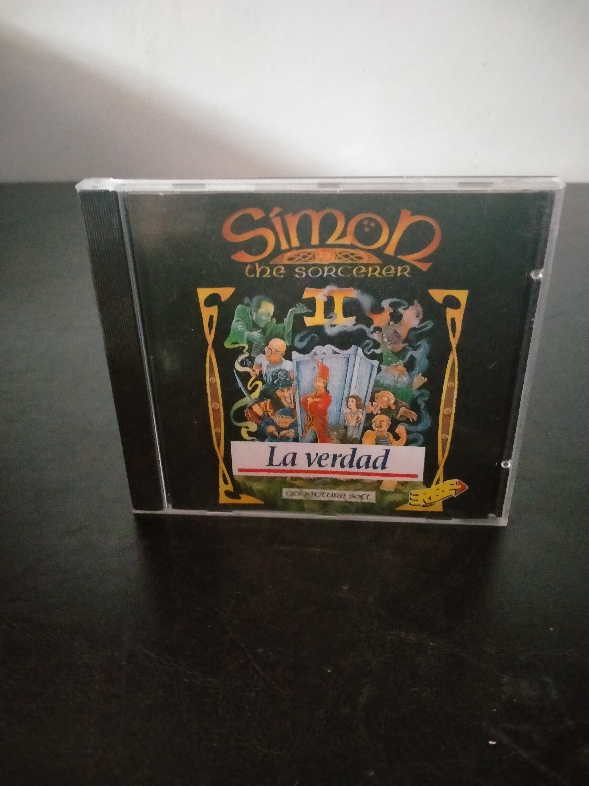

Ficha #000000
Simon the Sorcerer II: El León, el Mago y el Armario
Simon the Sorcerer II: El León, el Mago y el Armario es una aventura gráfica desarrollada por Adventure Soft y publicada originalmente en 1995. La historia recupera al joven y sarcástico Simon, transportado nuevamente a un mundo fantástico cuando el hechicero Sórdido regresa en busca de venganza. Mantiene la estructura point and click de la primera entrega, con escenarios dibujados a mano, inventario, diálogos humorísticos y numerosos puzles construidos alrededor de parodias de cuentos, literatura fantástica y convenciones del género. La versión española en CD-ROM fue distribuida por Erbe Software y destaca por su localización completa al castellano, incluidas las voces, un elemento especialmente relevante dentro del mercado español de aventuras gráficas de mediados de los años noventa. Esta edición en caja jewel case representa una distribución compacta del lanzamiento español para compatibles PC con MS-DOS.
- Formato
- Jewel Case
- Plataforma
- MsDos
- Género
- Aventura gráfica Point and click Comedia Fantasía
- Serie
- Todos Jewel Case
- Desarrollador
- Adventure Soft
- Distribuidor
- Adventure Soft, Erbe Software
- EAN
- —
Contenido de la edición
- Caja jewel case
- CD-ROM
- Carátula impresa
Preservación
- Protección
- No determinado
- Formato recomendado
- ISO
- Jugable en virtualización
- Sí
Preservar mediante una imagen completa del CD-ROM original y digitalizar las carátulas y cualquier documentación incluida. La ejecución es viable mediante un entorno MS-DOS virtualizado o mediante ScummVM, conservando los archivos de voces y datos correspondientes a la versión española.